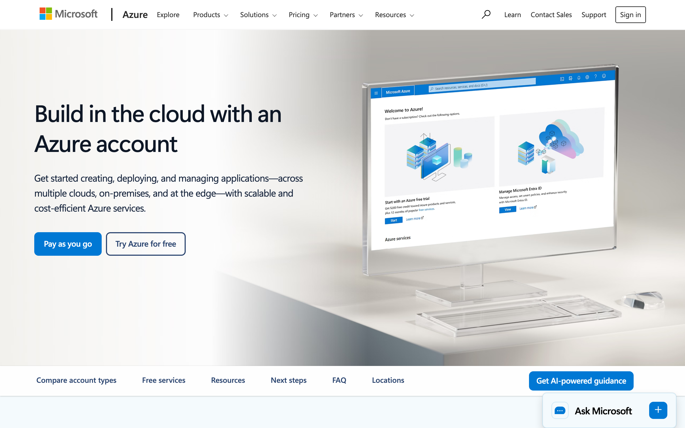
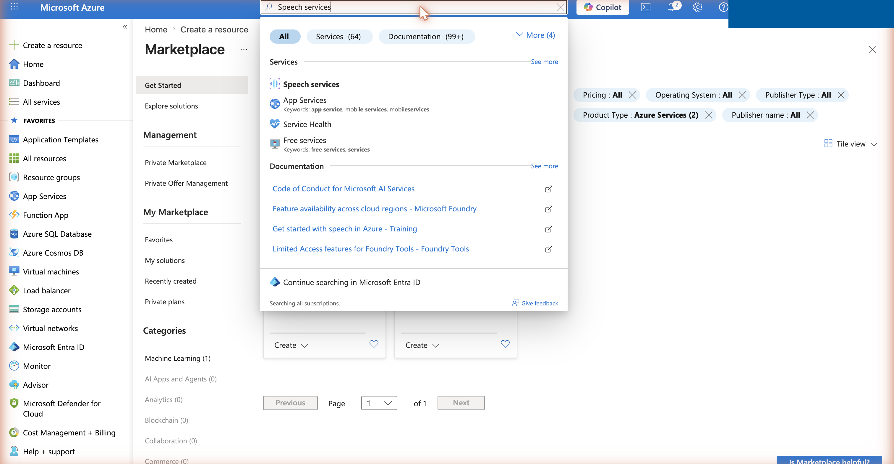
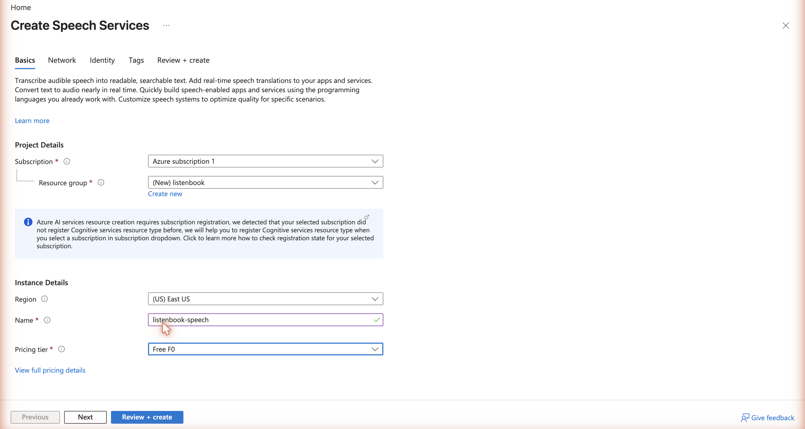
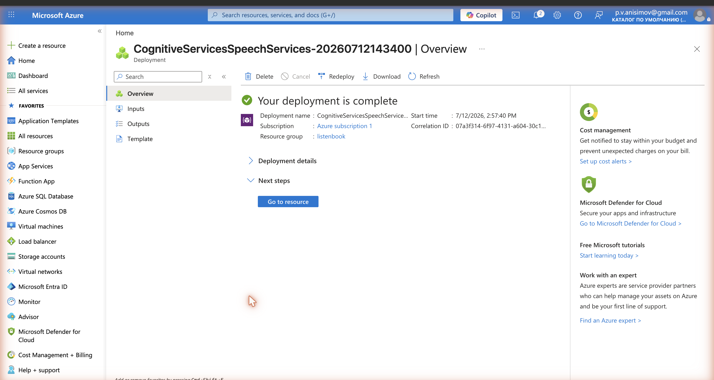
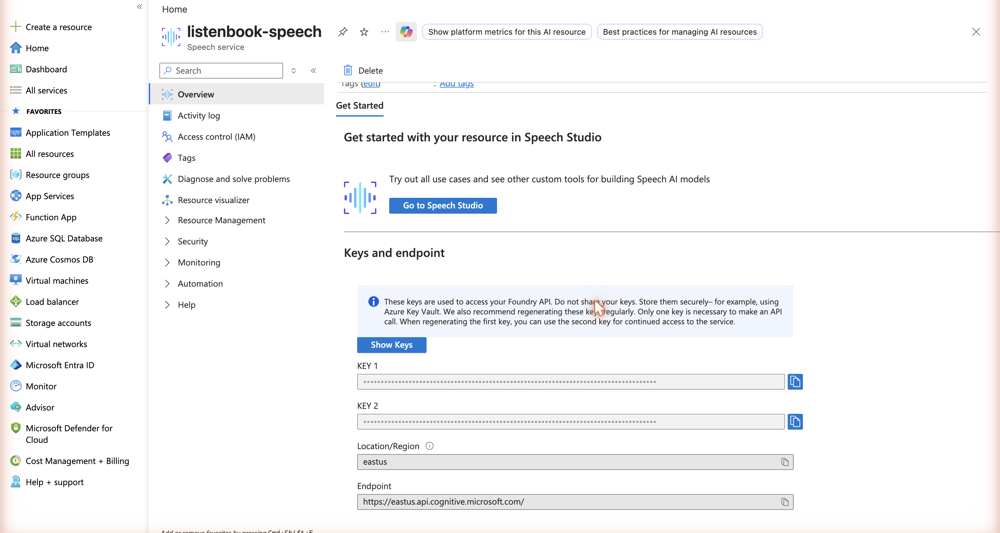
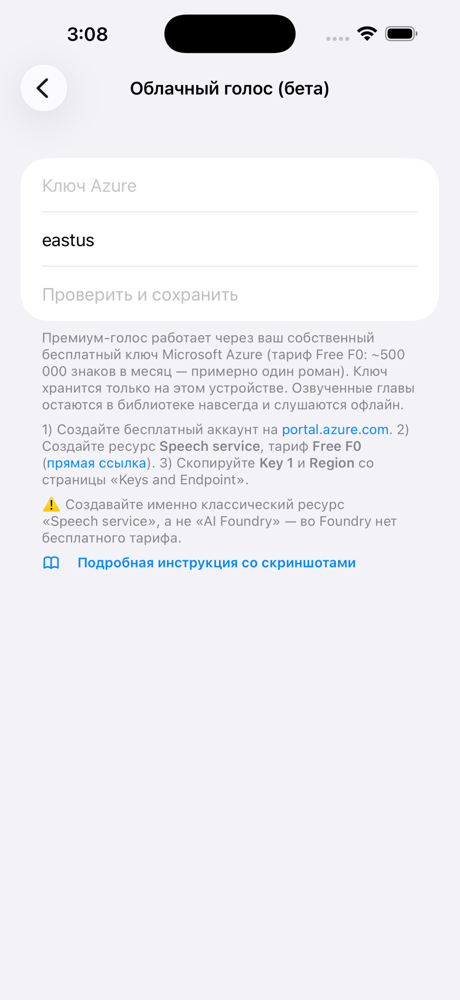

Premium voice: your free Azure key
The premium voice Dmitry in ListenBook uses your own free Microsoft Azure key (Free F0 tier: ~500,000 characters per month — about one novel). The key is stored only on your device (in the Keychain) and never leaves it except for synthesis requests to Azure. Generated chapters stay in your library forever and play offline.
You'll need: an email address, a bank card (identity verification only — you won't be charged, and there are no automatic payments), and about 10 minutes. The Free F0 tier itself is free with no time limit — but see the note below about the account's first 30 days.
Step 1. Create a free Azure account
Open azure.microsoft.com/free, press Try Azure for free, and sign in with any Microsoft account (or create one), following the sign-up prompts. New accounts also get $200 of credit for 30 days — not needed for this: Free F0 is free on its own. Note that the new account starts as a 30-day Free Trial — see “After the first 30 days” below.

Step 2. Create a "Speech service" resource (Free F0 tier)
The fast path is the direct link to the creation form. Or manually: on portal.azure.com, type Speech services in the top search bar and pick the "Speech services" service in the results, then press + Create. (Don't search via "Create a resource" → Marketplace: it shows third-party paid products, and the classic "Speech service" isn't among them.)

In the creation form:
- Resource group — "Create new", any name (e.g.
listenbook); - Region — the closest to you (e.g.
East US). Remember it — the app needs it; - Name — any available name;
- Pricing tier — must be Free F0.
Press Review + create → Create and wait for "Your deployment is complete".


Step 3. Copy Key 1 and Region
Press Go to resource — the Keys and endpoint section is
visible right on the resource page (it's also available on the left:
Resource Management → Keys and Endpoint). Copy KEY 1 with the
copy button next to the field (no need to reveal the key) and note the
Location/Region (e.g. eastus).

Don't share the key with anyone. If it leaks, the same page has a Regenerate button.
Step 4. Paste the key into ListenBook
In the app: Settings → Cloud voice (beta) → paste the key and region → Verify and save. A green "Key works" will appear — done: when importing a text book, choose the "Dmitry (cloud)" voice.

After the first 30 days: one free click
A new Azure account starts as a 30-day Free Trial subscription. When the trial ends, Microsoft does not start charging you — instead the whole subscription is paused, and your speech key stops working until you convert the account to a regular one.
To keep the key working, upgrade once — it is free: in the Azure portal open Subscriptions → your subscription → press Upgrade (the portal also shows a banner with this button when the trial is about to end). Choose the option without a paid support plan. Your Speech resource stays on the free F0 tier, the monthly free quota keeps resetting, and nothing is charged — you would only pay if you yourself moved the resource to the paid S0 tier.
If you skip the upgrade, cloud voice simply stops when the trial ends — the app keeps working with the free on-device voice, and you can upgrade later at any time.
Troubleshooting
| Message | Cause and fix |
|---|---|
| Invalid key or region | The key wasn't copied in full, or the region doesn't
match the resource's region. The region is written as one lowercase word:
eastus, not "East US". |
| Monthly free quota is used up | The F0 tier gives ~500,000 characters per month. It resets next month, or continue with the free local voice. |
| The key worked, but stopped after about a month | Your 30-day Free Trial subscription ended and Azure paused it. Do the free one-click upgrade (see “After the first 30 days”) — the key starts working again. |
| Too many requests | The free tier allows at most 20 requests per minute. The app waits and resumes automatically; this is normal for long books. |
| Connection failed | Check your internet connection and the region. |